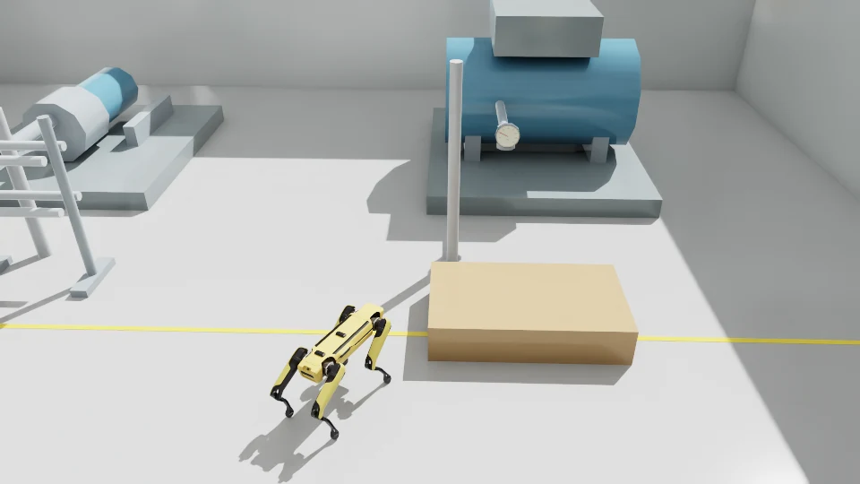

Graduate research · CMU CERLAB
VLM — Robot Manager
Aug 2025 – Present
I build perception, viewpoint selection, and evaluation software for a language-driven industrial inspection robot. The current implementation uses simulated Spot RGB-D observations, geometric planning, and VLM gauge reading.
Demonstrated inspection across four gauge designs in two simulated factory layouts, with geometry-based viewpoint selection and route validation taking a measured median of 1.05 s across six proposals.
